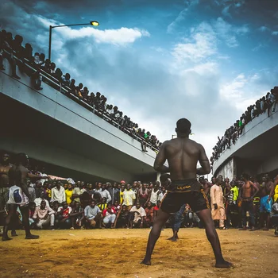
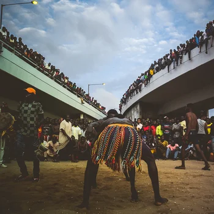
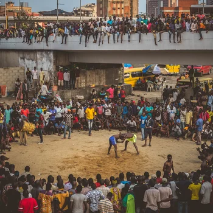
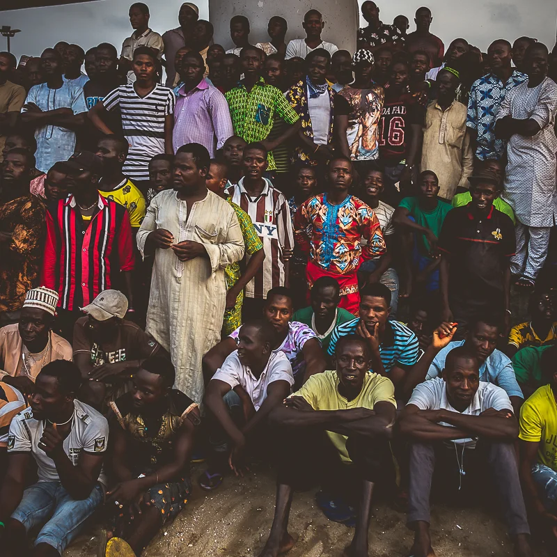

how to photograph lagos 2
making this project encouraged me to identify traces of communality in spaces that have been bleached colourless; where the liminal has atrophied into the profane, as the people seek to embrace the concept of individualism. in this project, i also found an answer to a foresighted question: 'how does one make lagos to stand still for a portrait.' it is noteworthy that lagos is attentive to theatrics.





